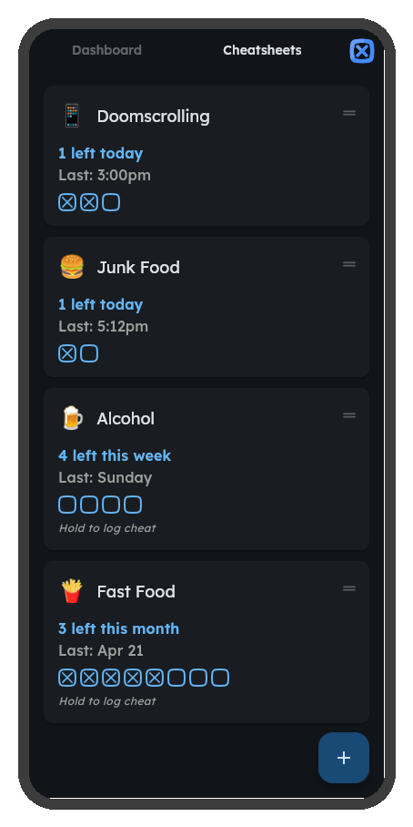
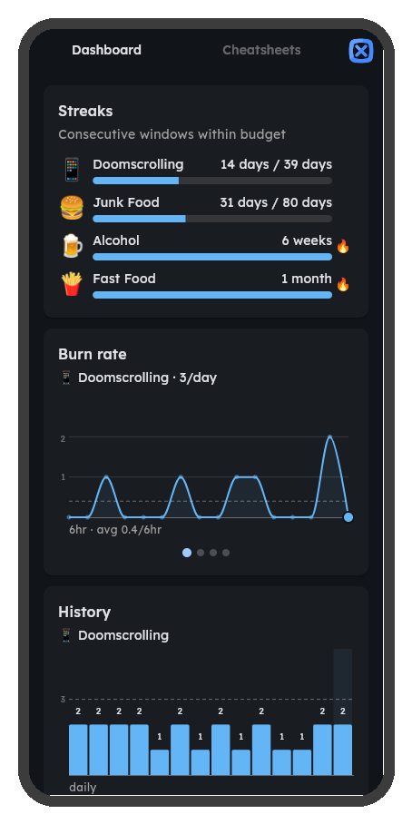
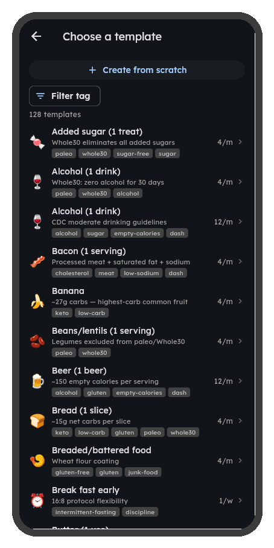

That extra scroll, the late-night snack, one more drink — they feel harmless in the moment. But habits have a tipping point, and most people don't notice until they're past it.
You don't need to quit. You need a budget.
Set your personal limit, open the app only when you slip,
and let the counter do the rest — stay under your number
and the biology stays on your side.
Set budgets for the habits
you're not ready to quit

Streaks, budgets, and
progress at a glance

120+ researched templates
or create your own

Most people think the only way to beat a bad habit is to quit entirely. But abstinence goals backfire — a single slip triggers shame and full relapse. Moderation with self-awareness produces the same outcomes without the failure modes, and simply tracking each slip is enough to change the behavior.
Quitting cold turkey makes it worse. The Abstinence Violation Effect shows that strict zero-tolerance goals cause a single slip to trigger shame and full relapse. Budgeted moderation interrupts this spiral before it starts.
Alcohol thresholds are well defined. The NIAAA identifies specific weekly and per-occasion drink counts above which risk of dependence rises sharply, with those drinking within moderate limits having only a 2-in-100 chance of developing alcohol use disorder.
Moderation produces the same outcomes — and fewer dropouts. A meta-analysis of 22 studies found no significant difference between moderation and abstinence-based treatment. At two years and beyond, moderation goals actually outperformed abstinence, and patients with moderation goals were less likely to quit treatment entirely.
Self-monitoring is how people control bad habits. Vigilant self-monitoring — actively watching for slipups — is the primary mechanism by which people override habitual behaviors, more effective than willpower alone.
Quinn et al., Personality & Social Psychology Bulletin, 2010
Awareness alone changes the brain's valuation of a behavior. Bringing awareness to one's subjective experience during an unwanted behavior produces a change in how the brain values that behavior, leading to sustainable change without willpower or force.
Ludwig, Brown & Brewer, Perspectives on Psychological Science, 2020
Everyday behavioral addictions are clinically real. Nonsubstance behaviors — gambling, internet use, gaming, eating, and shopping — bear resemblance to substance dependence, engaging the same reward circuitry and producing compulsive patterns that warrant clinical recognition.
Having trouble or have a question? Reach out and we'll get back to you.
c0dep12ax1s@gmail.com